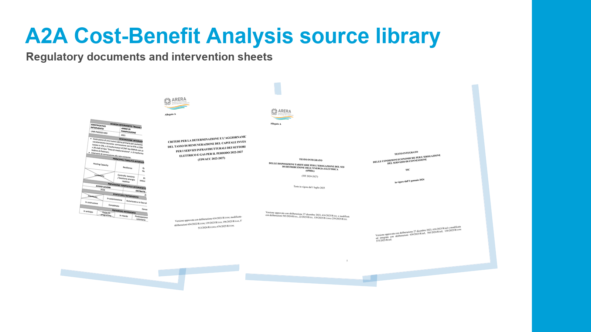
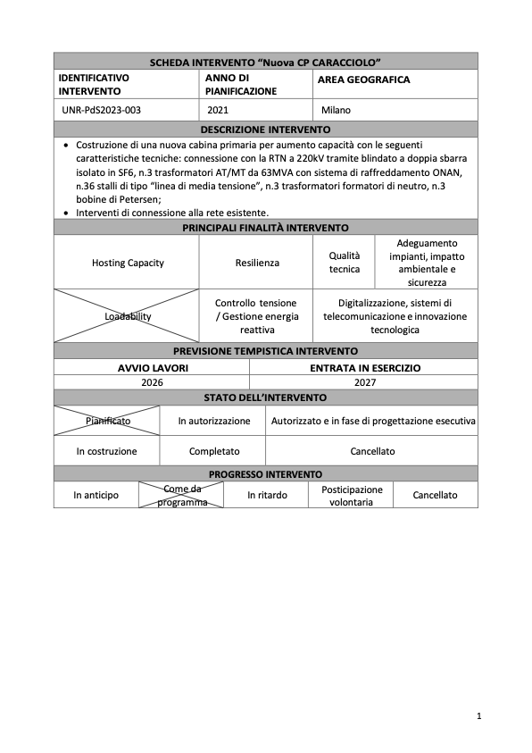
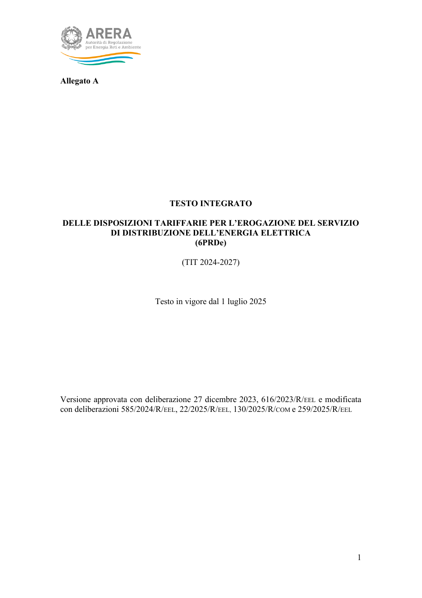
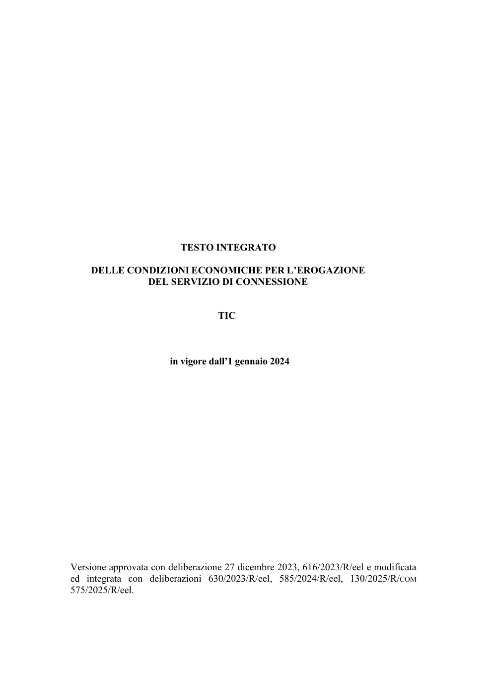

A2A Field Project
A navigable workspace for the CBA case. Uno spazio navigabile per il caso ACB.
Use this site to move between the intervention portfolio, tariff regulation, the regulatory WACC reference, connection-cost rules, and the analytical spine of the A2A electricity distribution cost-benefit analysis. Usa questo sito per navigare tra portafoglio interventi, regolazione tariffaria, riferimento WACC, regole sui costi di connessione e struttura analitica dell'analisi costi-benefici sulla distribuzione elettrica A2A.

Documents
Navigate the case libraryNaviga la libreria del caso
The homepage is the starting point. Each document page is organized for quick reading, citation, and model-building. La homepage è il punto di partenza. Ogni pagina documento è organizzata per lettura rapida, citazione e costruzione del modello.

Source PDF convertedDocumento sorgente
Intervention SheetsSchede intervento
A searchable portfolio of A2A/Unareti network projects with CAPEX, OPEX, timing, technical descriptions, and CBA relevance. Un portafoglio ricercabile di progetti A2A/Unareti con CAPEX, OPEX, tempistiche, descrizioni tecniche e rilevanza per l'ACB.

Source PDF convertedDocumento sorgente
TIWACC 2022-2027
A bilingual WACC reference with typographic formulas, service-specific parameters, and the final ARERA WACC table. Un riferimento WACC bilingue con formule tipografiche, parametri per servizio e tabella finale ARERA.

Source PDF convertedDocumento sorgente
Distribution Tariff RulesRegole tariffarie distribuzione
An English working translation of the updated tariff text covering cost recognition, ROSS, reference tariffs, infrastructure-use tariffs, reactive energy, equalization, and incentives. Testo tariffario aggiornato su riconoscimento costi, ROSS, tariffe di riferimento, uso infrastrutture, energia reattiva, perequazione e incentivi.

Source PDF convertedDocumento sorgente
Connection Economic ConditionsCondizioni economiche di connessione
An English working translation of the integrated rules for electricity connection service requests, contributions, temporary connections, special services, and annual updates. Regole integrate per richieste di connessione elettrica, contributi, connessioni temporanee, prestazioni specifiche e aggiornamenti annuali.
How to use
Suggested CBA pathPercorso ACB suggerito
- Start with CP Caracciolo in the intervention sheets and capture technical scope, timing, CAPEX, and OPEX.Parti da CP Caracciolo nelle schede intervento e raccogli perimetro tecnico, tempi, CAPEX e OPEX.
- Use TIT to explain tariff recognition, regulatory capital, depreciation, ROSS, and allowed revenues.Usa TIT per spiegare riconoscimento tariffario, capitale regolatorio, ammortamenti, ROSS e ricavi ammessi.
- Use TIWACC for the discount rate and regulatory cost-of-capital assumptions.Usa TIWACC per tasso di attualizzazione e ipotesi regolatorie sul costo del capitale.
- Use TIC when connection-cost logic, permanent/temporary connection treatment, or specific service charges are relevant to an assumption.Usa TIC quando servono logica dei costi di connessione, trattamento delle connessioni permanenti/temporanee o corrispettivi per prestazioni specifiche.
- Map the project drivers to benefits such as loadability, losses, reliability, and flexibility.Collega i driver del progetto a benefici come loadability, perdite, affidabilità e flessibilità.
- Build the Excel model with base case, sensitivities, and a concise management recommendation.Costruisci il modello Excel con base case, sensitività e raccomandazione manageriale sintetica.
Document roles
What each reference contributesCosa apporta ogni riferimento
The intervention sheets define the physical project and investment assumptions. TIT explains tariff recovery and regulated cost recognition. TIWACC supplies the regulated discount-rate framework. TIC explains when connection-service charges are calculated through flat rates, distance, available power, relative cost, or no charge. Le schede intervento definiscono progetto fisico e ipotesi di investimento. TIT spiega recupero tariffario e riconoscimento dei costi regolati. TIWACC fornisce il quadro del tasso di attualizzazione. TIC spiega i corrispettivi di connessione.
For the CP Caracciolo assignment, start from the intervention sheet, use TIT/TIWACC for regulatory financial framing, and use TIC only where connection economics or customer-contribution treatment affects the model boundary. Per l'assegnazione CP Caracciolo, parti dalla scheda intervento, usa TIT/TIWACC per l'inquadramento finanziario-regolatorio e usa TIC solo dove connessioni o contributi clienti incidono sul perimetro del modello.